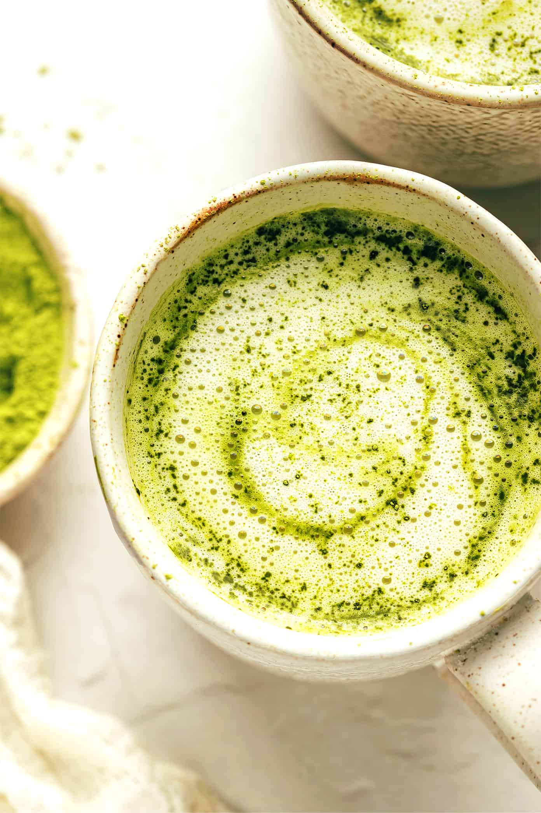
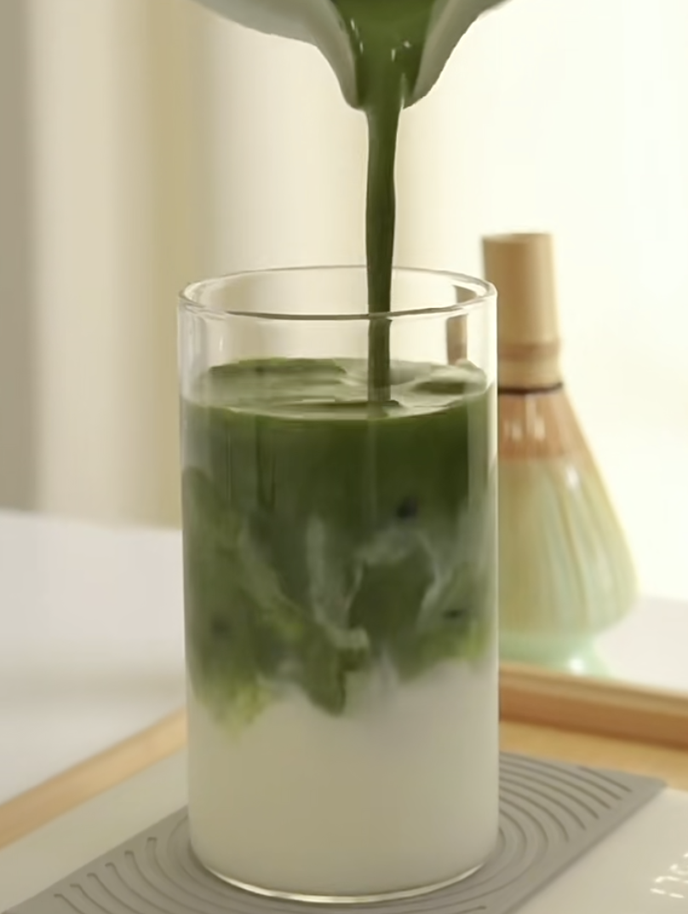
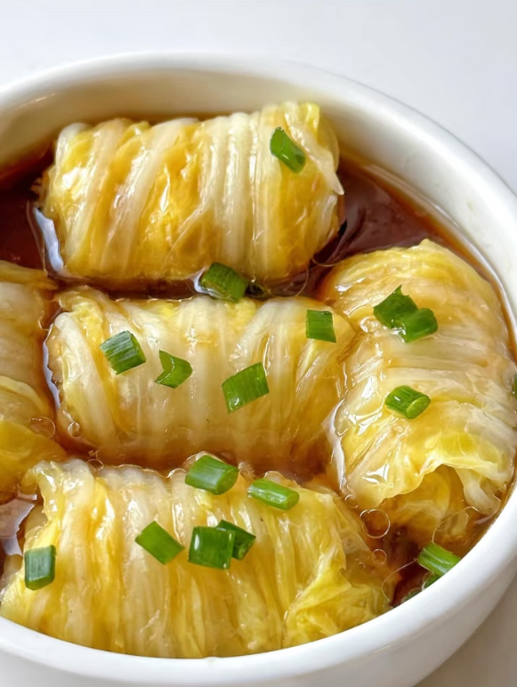

Try some of my favourite dishes!
-

Spring Salad Rolls
Salad rolls, also known as fresh spring rolls, are a healthy and flavorful dish featuring fresh vegetables, herbs, and protein like shrimp, tofu, or chicken wrapped in soft rice paper. These rolls are perfect for light meals, appetizers, or snacks. The homemade hoisin and peanut sauce elevates the dish with a savoury, nutty, and slightly sweet flavour, ideal for dipping.
Try it out!
-


Matcha Latte
A homemade matcha latte is a creamy and flavorful beverage that combines the vibrant taste of matcha green tea with the smooth richness of milk and a hint of sweetness. Made with premium matcha powder, unsweetened almond milk, and vanilla bean syrup, this drink is both a healthy and delicious alternative to traditional coffee-based lattes.
Try it out! -

Cabbage Wraps
Cabbage meat wraps are a comforting and flavorful dish made by wrapping tender Napa cabbage leaves around seasoned ground beef and cooking them in a savory soup. This hearty yet light meal combines the sweetness of the cabbage with the rich taste of the beef, all infused with the flavors of the broth.
Try it out!
Sandy
Hey, I’m Sandy, and welcome to my food blog! I’m a teenager who’s obsessed with experimenting in the kitchen and finding new recipes to try. Whether it's trying out a trendy snack or recreating dishes from my favorite shows and movies, I’m here to share the recipes, fails, and wins along the way. This blog is all about making cooking fun and approachable, no matter your skill level. So, grab your apron and let’s cook up something awesome together!